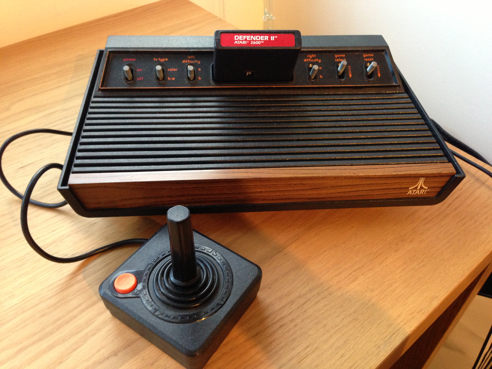
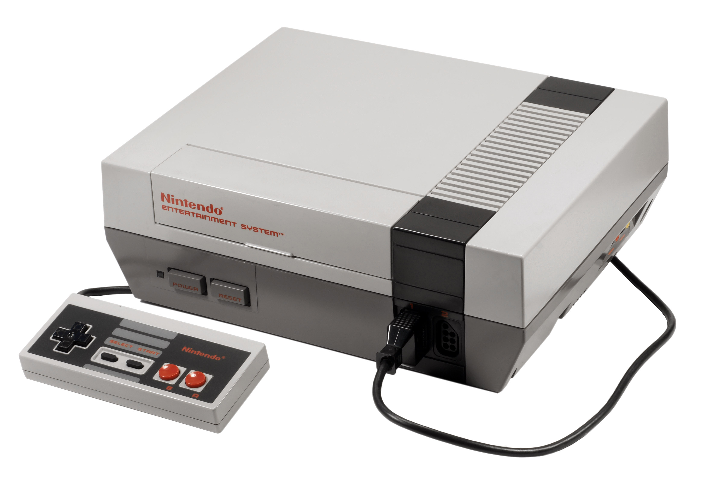
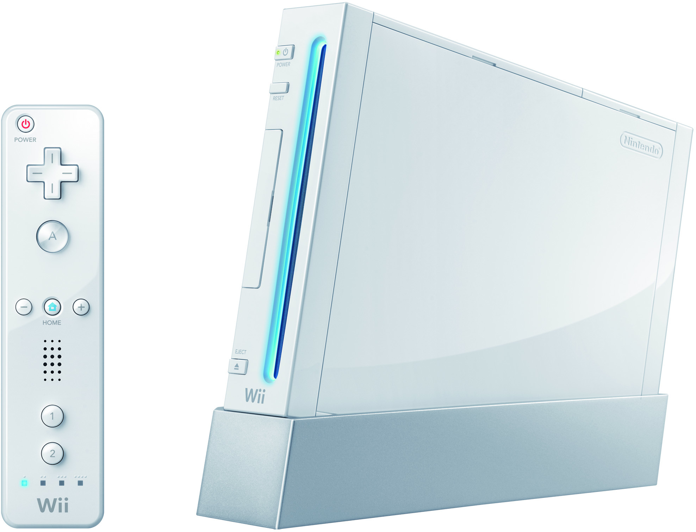
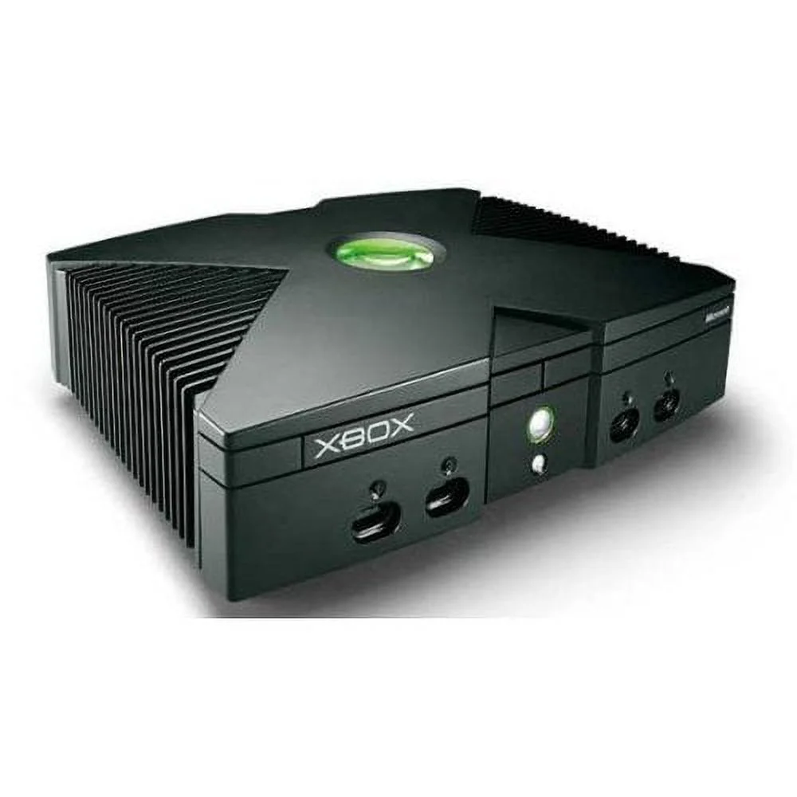
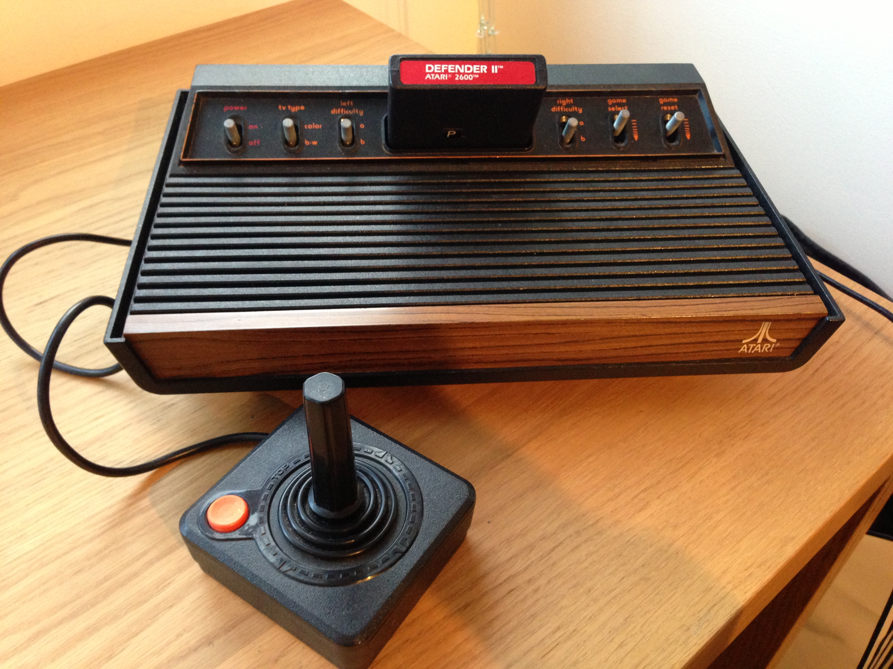
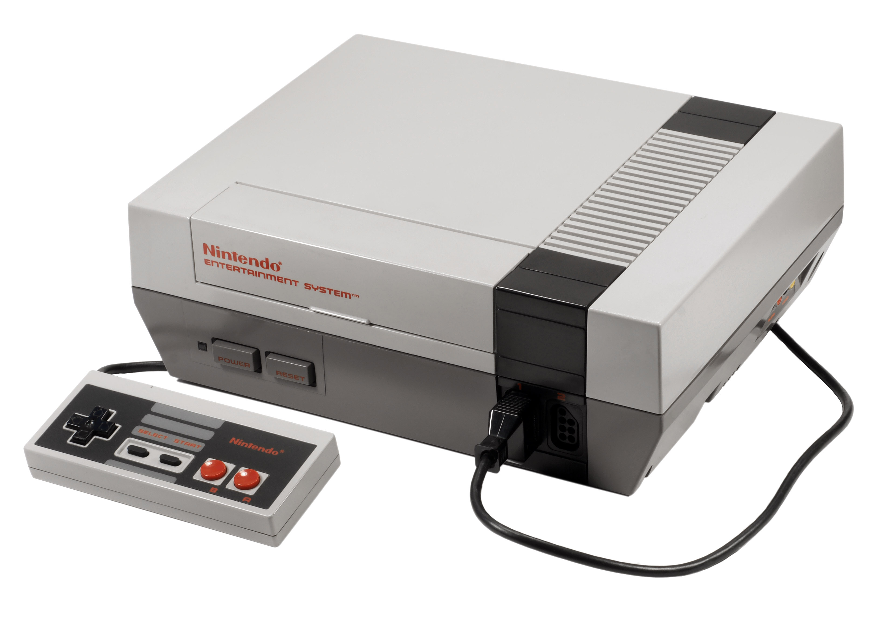
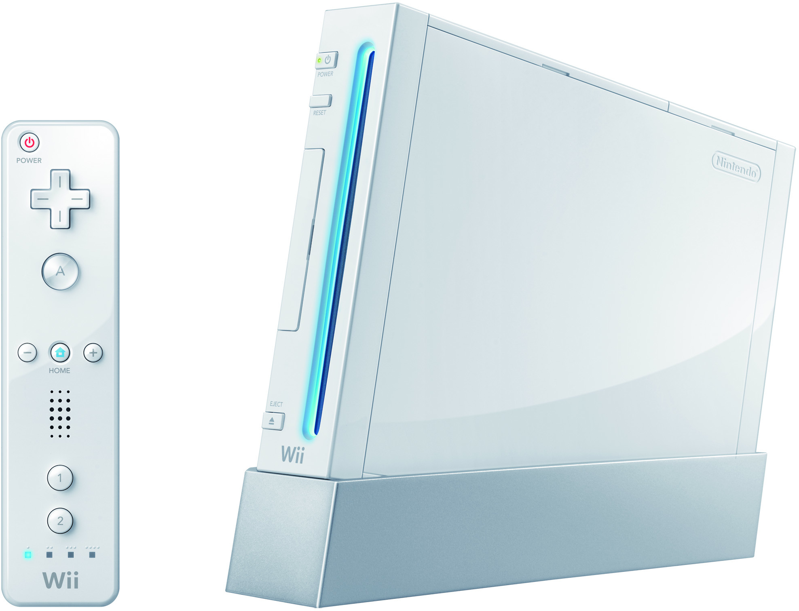
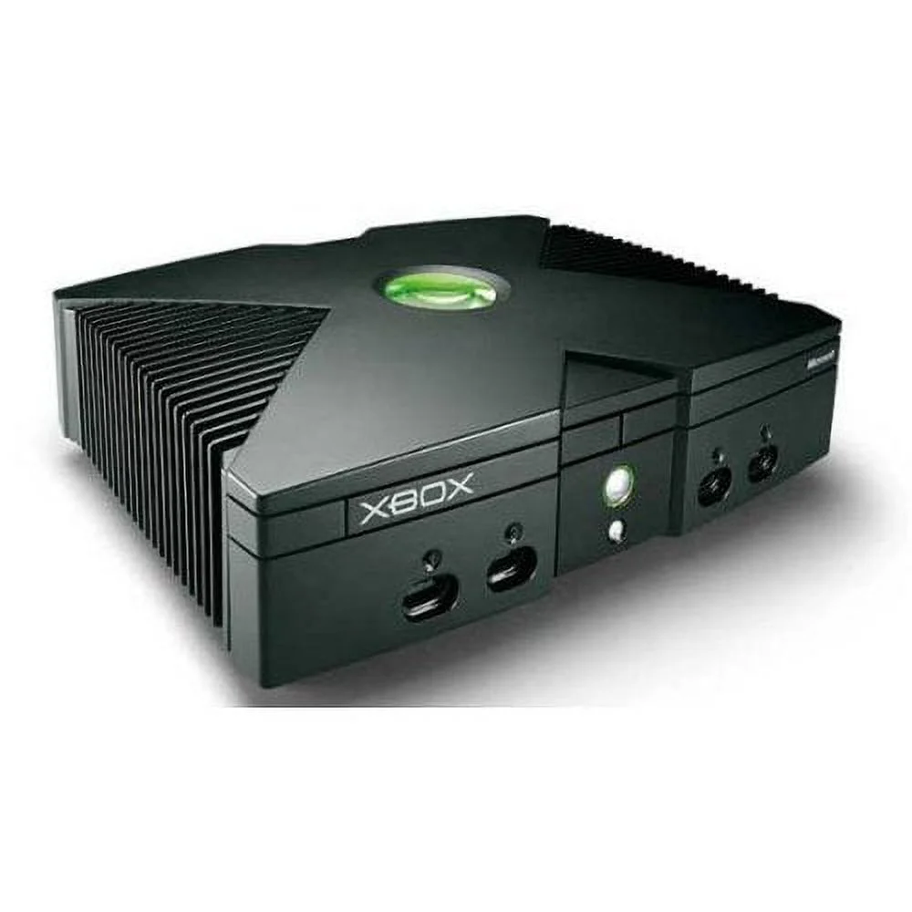

Discover how intense competition between gaming companies shaped the industry and led to the modern era of gaming.
90s Console Wars
Nintendo vs. Sega
An intense rivalry between Nintendo and Sega in the 90s shaped the future of gaming. The Super Nintendo Entertainment System (SNES) and Sega Genesis competed with exclusive titles and groundbreaking franchises like "Sonic the Hedgehog" and "Super Mario." Aggressive marketing campaigns aimed to build brand loyalty, and this competition pushed each company to innovate both console compute power and game quality.
The 2000s saw significant advancements in gaming, including the success of the PlayStation 2 as the best-selling console, and Microsoft's entry into the market with the Xbox and the revolutionary Xbox Live online service.
The Xbox 360 and PlayStation 3 further pushed the boundaries, bringing high-definition graphics, downloadable content, and multiplayer gaming to the mainstream. These advancements solidified video games as a major entertainment medium, attracting a broader audience and paving the way for future innovations in interactive and connected gaming experiences.
The Rise of Online Gaming
Social Connections
The online features are still a great way to connect with friends. You can start a chat with friends on Discord, Xbox Live, or PlayStation Network (PSN) to enhance your gaming experience.
Online multiplayer games like "Halo 3" and "Call of Duty: Modern Warfare 2" became cultural phenomena, emphasizing the importance of social interaction in gaming.
Arrange the Consoles Chronologically
Drag the gaming consoles below into the drop zone in the order they were released. Then click "Check Order" to see if you're correct!


 






